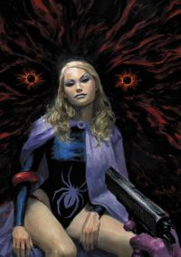

Одна из лучших агентов ЩИТа. Она - давний член Мстителей и была членом-основателем и единственным лидером недолговечной лос-анджелесской суперкоманды, названной Чемпионами.
Сколько еще рабочих мест... Сколько времени займет... Я не знаю, смогу ли я сделать это... Даже если я смогу себе это простить... Это - то, что я теперь... И вы никогда не узнаете, кем я была раньше.
- Чёрная Вдова
Ходили слухи, что Наташа Романова как-то связана с последним царём России, но это никогда не было подтверждено.
Наташа родилась приблизительно в 1928 году. Дом, в котором жила семья Наташи в Сталинграде, был уничтожен во время нападения империалистов, и её мать передала её советскому солдату, искавшему в развалинах свою сестру, прежде чем погибнуть под обрушившимся зданием. Солдата звали Иван Петрович Безухов (Ivan Petrovich Bezuhkov), который присматривал за ней всю её жизнь. В конце 1930-х годов Наташа привлекла внимание советской разведки, которая начала её тренировки. В 1939 году, благодаря Сталину, Наташа была принята в шпионскую школу Тараса Романова (Taras Romanoff), где обучалась различным областям шпионского ремесла: скрытым стратегиям, самообороне, владению ножом, торговле информацией. В этой школе она встретилась со знакомым Тараса, Логаном (Logan). Логан тренировал Наташу боевым искусствам. Позже, Логан убил Тараса, что и было его целью. Наташа позволила Логану уйти, поскольку он нравился ей больше Тараса. Наташа выучила важный урок: любовь и преданность имеют большое значение, и поэтому являются важным козырем.
Наташа провела три месяца в лесу недалеко от Москвы (по другой версии в Сибирских лесах), где и была найдена Иваном, и вернулась под его опеку. К этому моменту, несмотря на её возраст, Наташа была весьма умела в области убийства и шпионажа. В 1941 году нацист Барон фон Штрукер (Baron von Strucker) похитил Наташу и передал её клану Рука (Hand) на острове Мадрипур (Madripoor). Она должна была стать их мастером-убийцей, но её спасли Иван, американский супергерой Капитан Америка (Captain America) и канадский искатель приключений Логан. Во время первой попытки спасения, Логан узнал, что Наташа находится на задании по устранению лидера Руки.
Служа в Советской Армии, в последние месяцы Второй мировой войны, 16 летняя Наташа влюбилась в 17 летнего солдата Николая (Nikolai). Они объявили себя женатыми, и Николай повязал Наташе на палец ленточку своей матери, поскольку это было единственное кольцо которое он мог ей дать. Позже Наташа забеременела, но Николай погиб во время войны, а их дочь родилась мертвой.
После войны Наташа часто навещала могилу своей дочери в словакском лесу, но прекратила делать это после смерти женщины помогавшей ей с родами, и жившей неподалёку. Также Наташа там же закопала розу. Исходя этого, и того, что правнучку той женщины зовут Роза, можно предположить, что Наташа хотела назвать девочку Роза.
В 1956 году, когда Наташа и Иван после Второй мировой войны путешествовали по разорённой войной Европе, Наташа, чтобы спасти жизнь Ивана, приняла предложение вступить в советскую правительственную программу «Чёрная Вдова» (Black Widow Program), проводимой Красной Комнатой (Red Room), в обмен на продлевающий жизнь химикат. Целью программы было создание из девочек спящих агентов, которые затем будут разосланы по всему миру. Во время пребывания там, она была био- и психотехнологически улучшена, что дало ей долгие жизнь и молодость. Процедура была разработана учёной Людмилой Антоновной Кудриной (Ludmila Antonovna Kudrin). Григор Иванович Пчелинцев (Grigor Ivanovich Pchelintsov) внедрил Наташе фальшивые воспоминания об обучении в Московском художественном институте и последующей карьере балерины. Это должно было скрыть её промывку мозгов, и обеспечить подсознательную преданность Наташи своей стране. Также во время пребывания в программе, одним из её учителей был Зимний Солдат (Winter Soldier). Наташа и Зимний Солдат вскоре полюбили друг друга. Но в 1958 году начальство прекратило их отношения, и организовало брак Наташи и Алексея Шостакова (Alexi Shostakov), выдающегося советского лётчика-испытателя.
Вскоре из-за промывки мозгов Красной Комнатой, Наташа поверила в то, что она обычная домохозяйка, это было попыткой Хрущёва дать Наташе нормальную жизнь. Несмотря на то, что брак с Алексеем был организован Кремлём, Наташа сильно влюбилась в Алексея.
После нескольких лет счастливой совместной жизни КГБ решило, что навыки этой пары сделают их превосходными специальными агентами, и разделило их, пока Алексей был на миссии. Тренированный как Красногвардеец (Red Guardian), Алексей стал ответом Советского Союза на Капитана Америка Соединённых Штатов. Наташе сказали, что её муж погиб в крушении экспериментальной ракеты. Наташа изьявила желание помочь своей стране в борьбе против Запада и её завербовали в КГБ, где она закончила обучение под руководство Алексея Брускина (Alexi Bruskin) и других в Академии Красной Комнаты (Red Room Academy), где и получила прозвище Чёрная Вдова. В Красной Комнате её запрограммировали саботировать системы защиты США в качестве агента Октябрь (Agent October) в отдалённом будущем.
Во время одного из заданий, Наташа помогла американскому наёмнику Дэнни Френчу (Danny French) украсть уникальную энергосферу из Проекта: Четыре (Project: Four). Однако Френч скрылся со сферой, предав их нанимателя, магната Дэймона Дрэна (Damon Dran).
Позже, человек по имени Логан объявился в США, после его вербовки Канадским Департаментом Аш (Department H), Наташа защищала его от убийц ГИДРЫ (HYDRA), также как это делали его бывшие товарищи Ник Фьюри (Nick Fury) и Кэрол Денверс (Carol Danvers). Но Логан не помнил об их ранней встрече, поскольку его воспоминания были подавлены Оружием Икс (Weapon X). Она позже снова столкнулась с ним, когда он, вместе с Кэрол Денверс и пилотом Беном Гриммом (Ben Grimm), участвовал в разведывательной миссии на территории России. Наташа сбила их самолёт, а позже обезвредила его систему самоуничтожения. Когда Кэрол украла разведывательный самолёт, Наташа отправилась за ней в погоню. Позже, когда Наташа собиралась сбить американский бомбардировщик, который Логану, Бэну и Кэрол удалось вернуть, она была отозвана для разбирательства в ситуации. Она также обучала русских оперативников, в том числе и Бориса Буллского (Boris Bullski), который позже был её напарником в нескольких миссиях.
/black-widow3.jpg)
Чёрная Вдова десятилетиями мелькала на Европейской социальной сцене, завлекая в свою паутину блестящих и богатых изобретателей, а затем передавала их секреты своим боссам. Чёрная Вдова получила задание помочь Борису Тургенову (Boris Turgenov) в убийстве профессора Антона Ванко (Anton Vanko) за то, что тот предал свою страну. Чёрная Вдова должна была проникнуть в Старк Индастриз (Stark Industries). Тони Старк (Tony Stark), оригинальный Железный Человек (Iron Man), постоянно срывал её планы против Старк Индастриз. Борис украл и надел костюм Багрового Динамо (Crimson Dynamo), но Ванко пожертвовал собой, чтобы спасти Железного Человека, и в процессе убил Тургенова, используя экспериментальный нестабильный лазерный пистолет. После того как Борис и Антон погибли, Наташа решила остаться в Америке и действовать в качестве шпиона, чтобы вернуть расположение КГБ. Изобразив раскаяние, она соблазнила Тони Старка, чтобы украсть его антигравитационное устройство. Наташе удалось украсть устройство и устроить несколько диверсий против США, но Железному Человеку удалось отключить устройство, но не удалось схватить Наташу.
Наташа скоро столкнулась с начинающим костюмированным авантюристом Соколиным Глазом (Hawkeye). Он помогал ей в нескольких миссиях, поскольку его влекло к Наташе, а она этим пользовалась. Она также улучшила арсенал Соколиного Глаза высокотехнологичными стрелами. Наташе удалось обманом заставить Соколиного Глаза украсть чертежи у Тони Старка, и в итоге он столкнулся с Железным Человеком. Наташа наблюдала за битвой обоих, но одна из стрел Соколиного Глаза была отбита Железным Человеком, и попала в Чёрную Вдову, вырубив её. Позже Наташа получила новые приказы — перестать нападения на Старк Индастриз и переключится на Уилльямс Инновейшенс (Williams Innovations). Наташе снова удалось уговорить Соколиного Глаза помогать ей. Однако он столкнулся с Человеком-Пауком (Spider-Man), который убедил Соколиного Глаза, что он поступает не правильно, и Соколиный Глаз отступил, частично из-за того, что начал догадываться об истинных мотивах своей возлюбленной. Однако, Наташе как-то удаётся убедить Соколиного Глаза снова выкрасть чертежи у Старка. Пока Соколиный Глаз выполнял задание, Наташа была похищена КГБ и доставлена обратно в Россию. Они выдали ей новый костюм, позволяющий лазить по стенам, и снаряжение, в том числе и первую версию её знаменитых браслетов. Наташа затем вернулась обратно в США и присоединилась к Соколиному Глазу в его битве с Железным Человеком. Им почти удалось победить Железного Человека, однако тот вырубает Вдову с помощью электрошока и Соколиный Глаз отступает, несмотря на приказ Вдовы, чтобы доставить Наташу в безопасное место. В это период, Чёрная Вдова поняла, что влюбляется в Соколиного Глаза, это пошатнуло её лояльность своей стране. Когда её начальство узнало правду, они попытались застрелить её, из-за чего она оказалась в больнице, это убедило Соколиного Глаза начать новую честную жизнь и попытаться вступить в команду Мстители (Avengers).
Когда Чёрная Вдова была захвачена агентами КНР, ей промыли мозги, и она наняла Мечника (Swordsman) и Силача (Power Man) чтобы уничтожить Мстителей. Этот план провалился, когда Мстители победили обоих злодеев, а Наташе удалось избавиться от эффекта промывки мозгов, благодаря любви к Соколиному Глазу. Пытаясь загладить свою вину перед командой, она помогла им против расистской группы известной как Сыны Змея (Sons of the Serpent). Получив амнистию, Наташа получила предложение вступить в состав Мстителей, а также помогла им в битве с Альтроидами (Ultroids). Она угрожала убить их лидера Иксара (Ixar) если они не покинут Землю, и таким образом завоевала победу, однако Соколиный Глаз скрыл этот факт, чтобы она могла вступить в Мстителей, несмотря на то, что она нарушила их этических кодекс относительно убийства. Хотя она и часто помогала команде, однако, Вдова не стала постоянным членом Мстителей, из-за их клятвы не убивать.
Однако когда Ник Фьюри нанял её для шпионажа за её бывшим начальством в пользу Щ.И.Т.а (S.H.I.E.L.D.), она была вынуждена отклонить предложение о членстве в Мстителях и публично разорвать отношения с Соколиным Глазом. Как часть её миссии, она была объявлена предательницей, что разбило сердце Соколиного Глаза.
По прибытии в Китай, Чёрная Вдова была подвергнута воздействию Психотрона (Psychotron), устройства способного промыть разум любого человека, поскольку ей не доверяли. Однако у неё оказалась слишком большая сила воли и её усыпили газом и заперли. Узнав, что Наташа находится в плену у генерала Юрия Брушова (Yuri Brushov), бывшего начальника Вдовы, Мстители отправились в Китай чтобы спасти её, где столкнулись с Красногвардейцем, бывшим мужем Наташи, который считался мёртвым. Мстители, при поддержке Наташи и Красногвардейца, который был недоволен бесчестным отношением к Мстителям, смогли помешать коммунистам использовать Психотрон против западного мира. В ходе битвы Наташа была ранена, а Красногвардеец, как казалось, погиб, пожертвовав собой, чтобы спасти Мстителей.
После выздоровления, Наташа вернулась в Особняк Мстителей (Avengers Mansion) и приняла решение отклонить предложение Мстителей сделать её официальным членом команды и покончила с жизнью костюмированной искательницы приключений. Она также размышляла над предложением Соколиного Глаза о свадьбе, но когда Иван Петрович объявился в США, чтобы снова быть доверенным лицом Наташи, она воспряла духом и порвала с Соколиным Глазом, чтобы заняться сольной карьерой борца с преступностью.
Устав от бездействия, Чёрная Вдова приняла новое задание от Щ.И.Т.а, не дать Яйцеголовому (Egghead) использовать орбитальную платформу с целью шантажа. Она попала в плен, что побудила Соколиного Глаза использовать формулу роста Генри Пима (Henry Pym), чтобы стать новым Голиафом (Goliath) и спасти её. Она помогла Мстителям остановить Яйцеголового, хотя это и привело к смерти самого Яйцеголового, а также – как долгое время считалось – брата Голиафа Барни (Barney).
Наташа не смогла долго жить без супергероической деятельности, и после создания нового чёрного костюма и браслетов с её фирменным «Укусом Вдовы» (Widow's Bite), она решила доказать, что она способная искательница приключений победив Человека-Паука в бою. Несмотря на то, что Человек-Паук был болен и был не в лучшей форме в тот момент, он всё равно смог победить Вдову, однако она всё равно решила продолжить карьеру костюмированной искательницы приключений.
Она в основном сталкивалась с обычными преступниками и злодеми в костюмах, такими как Астролог (Astrologer) и Наблюдатель (Watchlord).
Путешествующий во времени андроид Мистер Клайн (Mr. Kline) сделал так, что Наташа, работая в Нью-Йорке, столкнулась с Сорвиголовой (Daredevil) и спасла его от Совы (Owl). Они быстро стали напарниками и у них начались романтические отношения. Отношения Наташи и Фогги Нельсона (Foggy Nelson), партнёра Мэтта (Matt Murdock), никогда небыли хорошими, поскольку он, будучи с промытыми мозгами, обвинил Наташу в убийстве Скорпиона (Scorpion), также подстроенного Клайном с помощью андроида двойника. Мэтт Мёрдок был адвокатом Наташи. Наташа никогда не простила Фогги за этот инцидент, хотя она и была признана невиновной. Отношения Мэтта и Наташи зашли настолько далеко, что он даже порвал с Карен Пейдж (Karen Page). Всё это было частью плана Клайна по достижению необходимого ему будущего. Клайн исчез, прежде чем смог дальше манипулировать двумя героями, но пара осталась вместе и решила переехать в Сан-Франциско, чтобы начать там новую жизнь. Там они продолжили бороться с преступностью, работая друг с другом. Они вместе победили таких противников как Гладиатор (Gladiator), Электро (Electro), Фиолетовый Человек (Purple Man) и Мистер Страх (Mr. Fear).
Также они столкнулись с Дэймоном Дрэном, который стал называть себя Неразрушимый Человек (Indestructible Man), который убил бы их, если бы Дэнни Френч не пожертвовал собой.
Наташа хотела начать карьеру вне борьбы с преступностью и постаралась стать модельером, но она не преуспела в этом начинании. Это не помогло её отношениям с Мэттом, которые стали слегка непрочными. После встречи с озлобленным Соколиным Глазом, Наташа и Сорвиголова временно вернулись в Нью-Йорк, чтобы помочь Мстителям в битве с Магнето (Magneto), и им было предложено вступить в команду, и Вдова приняла это предложение. Однако во время битвы с Львиным Богом (Lion God), Наташа поняла, что некомфортно чувствует себя в команде. Наташа покинула команду и вернулась к Мэтту в Калифорнию, где сразилась с Крикуном Ангаром (Angar the Screamer), Шомполом (Ramrod) и несколькими другими суперлюдьми, которые были мутированы Лунным Драконом (Moon Dragon) для использования против Таноса (Thanos).
После боя вместе с Сорвиголовой против террористических организаций Чёрный Призрак (Black Spectre), в чьи ряды она ненадолго была завербована с помощью промывки мозгов, и ГИДРЫ, Наташа столкнулась с ещё одно террористической группой, Меч Кары (Sword of Judgment) и обнаружила, что их лидер Агамемнон (Agamemnon) — это её давно потерянный друг Андрей Ростов (Andre Rostov), который был арестован после конфликта с ней и Существом (Thing).
Отношения Мэтта и Наташи не продлились долго, поскольку Наташа разорвала их из-за того, что чувствовала, что Мэтт не относится к ней как к равной на поле боя. Они остались друзьями, и она иногда помогала Мэтту.
Она оказалась первой среди равных, когда по воле случая она, Люди-Икс (X-Men) Ангел (Angel) и Человек Лёд (Iceman) и демонический мститель Призрачный Гонщик (Ghost Rider) объединились, чтобы помочь Геркулесу (Hercules) и Венере (Venus), которые были захвачены в плен армиями Плутона (Pluto) и Ареса (Ares). После спасения Геркулеса от принудительной женитьбы и ухода Венеры, оставшиеся герои организовали новую команду — Чемпионы Лос-Анджелеса (Champions of Los Angeles). Хотя Ангел был финансистом команды и обеспечивал поддержку публики, Наташа была единодушно признана наиболее квалифицированным тактиком и она согласилась стать лидером команды, а также завязала роман с Геркулесом.
После победы Чемпионов над безумными учёными Эдвардом Лэнсингом (Edward Lansing) и Стюартом Кларком (Stuart Clarke), она и Иван, а также Алексей Брускин, были атакованы несколькими русскими суперагентами, в том числе и сыном Алексея, Юрием (Yuri Bruskin), использующим броню Багрового Динамо, и Борисом Буллски, Титановый Человек (Titanium Man). Чемпионы помешали планам мести русских, а молодая мутантка Тёмная Звезда (Darkstar) присоединилась к команде героев. После битвы со многими злодеями, Чемпионы в итоге распались из-за конфликта приоритетов и личностей, а также из-за банкротства.
Наташа и Геркулес были вместе ещё некоторое время, и она стала снова принимать некоторые задания от Щ.И.Т.а. Она помогла Мстителям во время нескольких приключений, в том числе в борьбе с почти всемогущим Майклом Корваком (Michael Korvac). Во время этого приключения Наташа поняла, какими мимолётными должны казаться отношения со смертными для таких бессмертных как Геркулес, что привело к расставанию пары. Вдова, вместе с Мстителями, помогла Сорвиголове, когда тот находился под контролем Ищущего Смерть (Death-Stalker), и, после его восстановления, они вместе сразились с Нечестивой Троицей (Unholy Trio).
Когда ГИДРА попыталась захватить Щ.И.Т., Наташа была замучена до такой степени, что она регрессировала до старой тайной личности запрограммированной Щ.И.Т.ом — школьной учительницы Нэнси Рашмэн (Nancy Rushman). Человеку-Пауку удалось вовремя её спасти, чтобы Ник Фьюри и Шанг-Чи (Shang-Chi) поняли, что случилось и восстановили память Наташи во время последней битвы с Мадам Гадюкой (Madam Viper), Бумерангом (Boomerang) и Серебряным Самураем (Silver Samurai), и помогла спасти транспортёр Щ.И.Т.а (S.H.I.E.L.D. Helicarrier).
Хотя Наташа и Мэтт давно расстались, в преступном мире она по-прежнему была широко известна как любовница Сорвиголовы. Она была похищена Меченым (Bullseye), чтобы использовать её в качестве приманки для заманивания Сорвиголовы в ловушку. Наташа смогла освободиться и помочь Сорвиголове победить Меченого.
Однажды, когда Наташа отдыхала в пентхаусе Башен Уолдорфа, на нее напали неизвестные вооруженные люди. Она быстро нейтрализовала их и от одного из них узнала, что они были посланы Щ.И.Т.ом. Наташа проникла в штаб-квартиру Щ.И.Т.а в Нью-Йорке чтобы выяснить зачем Фьюри послал агентов за ней. На месте выяснилось, что это был не Фьюри, а Сэм Сойер (Sam Sawyer), желавший показать Фьюри, что Вдова готова к миссии, которую он приготовил. Также Наташа узнала, что Фьюри не хотел вовлекать её в эту миссию не из-за её профессионализма, а из-за её личного интереса в деле. Целью миссии являлся Иван Петрович — давний друг Наташи, а её задачей было выяснить, что с ним стало, был ли он похищен или добровольно переметнулся назад к Советам.
/black-widow6.jpg)
Наташа, под видом ученой перебежчицы Лауры Мэттерс (Laura Matthers), прибыла в Москву, где её встретили агенты КГБ. Наташа была доставлена в поместье на окраине Москвы, где она должна была работать над сверхсекретным проектом. Там она познакомилась с Майклом Коркораном (Michael Corcoran), американским ученым перебежчиком, и стала его любовницей. Наташа пыталась узнать хоть какую-то информацию об Иване и однажды ночью она узнала, что Иван был в поместье, но Наташа не узнала главного, прибыл он сюда по своей воле или его похитили. Когда Наташа попыталась узнать больше информации, то попала в ловушку. Агенты КГБ рассказали, что знали с самого начала о том, что она Черная Вдова и скармливали ей ложную информацию. После признания один из агентов убил Коркорана. Наташе удалось сбежать из поместья и добраться до точки встречи с агентами Щ.И.Т.а. Там она узнала, что нож, которым убили Коркорона, можно достать только в одном магазине в Гонконге. Наташа отправилась в этот магазин, но обнаружили хозяина магазина убитым таким же ножом. Тут же на неё напала группа наемников. Хотя наемникам сначала удалось взять верх, но Наташа в итоге расправилась со всеми кроме Железной Девы (Iron Maiden) - бывшей русской агентши облаченной в броню. Железная Дева ненавидела Черную Вдову, поскольку всегда находилась в её тени. Бой с Железной Девой шел не в пользу Наташи, но она была спасена появлением агентов Щ.И.Т.а во главе с Джимми Ву (Jimmy Woo). Наташа и Джимми проследили за сбежавшей Железной Девой до канализации, где в итоге смогли от неё избавиться, проломив пол под ней, вследствие чего она была затянута водоворотом. Затем Наташа и Ву проследовали по следам Железной Девы и оказались в кромешной тьме, где оба были вырублены наемницей по прозвищу Львиный Зев (Snapdragon). Плененная Наташа была доставлена на остров недалеко от побережья Китая, где встретилась с человеком стоящим за всем произошедшим — им оказался Дэймон Дран. Дран поведал пленнице, что он все это задумал, чтобы уничтожить Вдову. По плану Драна, двойник Вдовы должен был убить Ника Фьюри и обеспечить уничтожение Транспортера Щ.И.Т.а, что сделало бы её врагом на Западе, а обвинение в убийстве Коркорана, которое на самом деле совершил человек Драна, делало её врагом в СССР. Также это был Дран, кто похитил Ивана Петровича, но он не только похитил его, но и промыл ему мозги, чтобы то верно служил ему. Наташе удалось сбежать, но она столкнулась с Иваном, который попытался её задержать, и она была вынуждена вырубить его. В поисках передатчика, чтобы суметь предупредить Фьюри об опасности, Наташа снова столкнулась с Львиным Зевом, но в этот раз она победила наемницу. Но тут же Наташу окружили люди Драна, однако она была спасена Иваном, который, не смотря на промывку мозгов, в глубине души не мог позволить кому-либо причинить вред Наташе. Затем Наташа связалась с Фьюри и рассказала о двойнике и засаде. Фьюри, подозревавший неладное, убил двойника и разнес остров Драна. Наташе и Ивану удалось спастись, и к счастью Иван начал перебарывать промывку мозгов. Наташа собиралась быть рядом с Иваном пока будет идти депрограмирование, даже если это замет недели.
Во время одной из миссий, Чёрная Вдова пыталась не дать Руке выкрасть тело их давно умершего мастера-убийцы Кириги (Kirigi). Наташа была отравлена смертельным ядом Руки, и, отказавшись от помощи, прорвалась через агентов Щ.И.Т.а чтобы разыскать Мэтта. Её тело в итоге поддалось яду, но Камень (Stone) из клана Чистые (Chaste) сумел воскресит её. Вдова объединилась с Камнем и Сорвиголовой, чтобы помешать Руке воскресить Электру (Elektra). Во время битвы Сорвиголова сам попытался воскресить Электру, но думал, что ему не удалось, и он ушёл с Вдовой. Наташа знала, что Электра была успешно воскрешена, но оставила это в тайне ради благополучия Мэтта. Когда Наташа узнала, что Оксана Болишинко находится в посольстве России, она проникла в здание, ища прощения у своей наставницы за то, что она бросила балет и стала шпионкой. Оксана рассказала Наташе, что она не единственная её ученица, которая была забрана КГБ и что она приняла то, что шпионаж — это истинное призвание Наташи. (В связи c позднее раскрывшимися фактами – каноничность этого момента находится под сомнением – примечание автора)
После наблюдения за странной встречей Мэтта и его невесты Хизер Гленн (Heather Glenn), беспокоясь за психическое здоровье Мэтта, Наташа встретилась с Фогги Нельсоном. Он рассказал Наташе, что Мэтт был очень подавлен после смерти Электры, но также утверждал, что Мэтт губит карьеру Хизер чтобы заставить её женится на себе. Они решили написать поддельные письма для Мэтта и Хизер, чтобы они расстались (на самом деле причиной спора Мэтта и Хизер было то, что он прервал бизнес жизнь Хизер, потому что её компания была коррумпирована подручными Кингпина (Kingpin)).
Хизер Гленн была настолько расстроена разрывом с Мэттом, что покончила жизнь самоубийством, и Наташа была частично ответственна за это.
Во время кризиса Преисподняя (Inferno Crisis) Вдова спасла жизнь Карэн Пэйдж (Karen Page). После пребывания на посту пресс-секретаря недолгой компании Барбары Вален (Barbara Whalen) «Супер-Герои против наркотиков» (Super-Heroes Against Drugs), Наташа возвращалась к Мстителям во время таких кризисов как Деяния Возмездия (Acts of Vengeance) и серия атак Атлантиды (Atlantis) (организованных, чтобы оживить Старшего Бога Сета (Elder God Set). Она нашла нового союзника в виде Карателя (Punisher), когда они сражались с Обществом Зари (Sunrise Society), группой заговорщиков, чьё происхождение связано со Второй мировой войной.
Русские агенты обманом заставили Наташу выполнять их грязную работу. Они показали ей запись с живым Алексеем Шостаковым, который считался погибшим, и угрожали убить его, если Наташа не будет им помогать. Когда Наташа достала всё им необходимое, они раскрыли, что этот Алексей на самом деле Приманка-Живая Модель (Life Model Decoy) и попытались убить её. При поддержке Ивана она победила русских и уничтожила ПЖМ (LMD).
После этого Вдова объединилась с давним другом Логаном, а также Людьми-Икс Псайлок (Psulocke) и Джубили (Jubilee), чтобы ещё раз сразится с Рукой на Мадрипуре. В перерыве между боями, Наташа и Логан вспомнили их предыдущее совместное посещении Мадрипура в 1941 году.
Когда Мстители были реорганизованы новым уставом ООН, Вдова снова стала постоянным членом команды, и заместителем Капитана Америка. Между миссиями, она и бывшая Чемпионка Тёмная Звезда сразились с Звёздным Светом (Starlight), ещё одной бывшей Российской оперативницей, которая однажды заменяла Шостакова на посту Красногвардейца.
Железный Человек объединялся с Чёрной Вдовой, чтобы не дать агенту, известному как «Октябрь» развязать Третью мировую войну запустив ракеты. Ракеты были запущены, но Железный Человек не дал им взорваться. Октябрём оказалась сама Наташа, которая действовала под влиянием старого программирования КГБ, скрытого в её разуме. Вместе они захватили агента, ответственного за события.
Несмотря на занятость с Мстителями в борьбе с такими злодеями как Танос, Человек Крот (Mole Man) и другими, Наташа всё ещё находила время для работы на правительство.
Когда Наташа узнала от Ника Фьюри о гибели свое знакомой Кристин (Christine), то она решила разобраться в её жестоком убийстве. Кристин расследовала убийства правительственных телепатов, однако Наташа, объединившись с Сорвиголовой, выяснила, что погибло множество других низкоуровневых телепатов. Больше недели Наташа и Мэтт следила за агентом-экстрасенсом Фредом Уилсоном (Fred Wilson) в надежде выйти на убийцу. После 8-ми дней, Наташа заметила, как громила напал на Декстера Бэнкрофта (Dexter Bancroft), также следившего за Уилсоном. Вдова атаковала громилу, но сосредоточившись на нём, она упустила из виду фургон, вследствие чего она попала в плен к убийцам.
Наташа была прикована к стене в лесной лачуге, и наблюдала как Роуз (Rose) и Чарли (Charlie) зверски убивали Фреда и Декстера. Когда Роза заставляла Декстера убить себя, Наташа провалилась в воспоминания Розы, и наблюдала, как Розу насиловал отец и игнорировала мать. Также Наташа стала свидетельницей смерти матери Розы, и того как она убила отца. Наташа узнала, что Роуз убивала телепатов, желая остаться единственной телепаткой. Когда объявился раненный Сорвиголова, Наташа сумела освободиться из оков и победить Чарли. Наташа оказалась в ситуации, в которой она угрожала убить Чарли, а Роуз — Сорвиголову. Наташа убивает Чарли, и Роуз в ярости нападает на неё, но это оказывается уловкой, чтобы столкнуться глазами с Наташей и взять её под контроль. Наташа уже начала резать себе горло, но благодаря вмешательству Сорвиголовы, Наташа приходит в себя и убивает Роуз ударом в сердце.
Вскоре, Вдова ещё раз вернулась в Россию, чтобы по приказу Щ.И.Т.а расследовать расширяющуюся деятельность национальной мафии, некоторые из мафиози, возможно, были её бывшими коммунистическими начальниками. Она оказалась втянута в битву длящуюся десятилетия между двумя возможными бессмертными — старым борцом с преступностью Ночным Вороном (Night Raven) и его заклятым врагом, контрабандисткой наркотиков Йи Йанг (Yi Yang). Вдова помогла выследить Йи Йанг, и наблюдала, как вертолёт Йанг упал на Ворона.
Обстоятельства заставили её объединится с Щ.И.Т.ом против Росомахи, когда тот освободил из тюрьмы Щ.И.Т.а дикую женщину по прозвищу Рысь (Lynx), которой Щ.И.Т.ом временно была внедрена личность Нэнси Рашмэн. Наташа не прилагала особых усилий к их поимке, и когда Росомаха нашёл безопасное убежище для Рыси, Вдова и Ник Фьюри вместе отпраздновали успех их общего друга.
Когда Капитан Америка покинул Мстителей из-за этических разногласий касающихся Крии-Ши'арской Войны (Kree-Shi'ar War), Наташа стала лидером команды, обычно руководя операциями команды из Особняка Мстителей, позволяя Чёрному Рыцарю (Black Knight) руководить в поле. После того как Тони Старк инсценировал свою смерть, Наташа и Мстители столкнулись с такими злодейскими организациями как Легион Неживых (Legion of Unliving) Мрачного Жнеца (Grim Reaper), Собиратели (Gatherers) Проктора (Proctor), Безумный Легион (Lunatic Legion) Гален Кора (Galen Kor) и другими, однако внутрикомандные разногласия продолжались, что привело к расформированию Мстителей Западного Побережья (West Coast Avengers). После периода траура, когда она считала что Мэтт Мердок погиб, Наташа решила завести роман с Капитаном Америка, вместе с которым она снова столкнулась Дэймоном Дрэном, но в итоге она отказалась от этой идеи, возможно решив не повторять прошлых ошибок. Она сопровождала Железного Человека, вернувшегося в мир живых, во время деловой поездки в Россию, где на них напал её бывший студент/напарник Борис Буллски/Титановый Человек, который как казалось погиб в битве. Наташа наслаждалась романтическими отношениями с Железным Человеком во время этой поездки, но их отношения не получили развития. Когда ЦИИ (AIM) воссоздал Космический Куб (Cosmic Cube), Наташа попросила Ивана провести расследование, однако тот был серьёзно ранен Красным Черепом (Red Skull). Наташа почувствовала на себе «проклятие вдовы», когда двое близких друзей Наташи, Ник Фьюри и Капитан Америка, погибли. Однако позже выяснилось, что они живы.
Когда большинство Мстителей считались погибшими во время столкновения с Натиском (Onslaught), Вдова попыталась восстановить команду завербовав новых участников (таких как бывшие Чемпионы, Ангел и Человек-Лёд) и вернуть старых, но она сдалась после множества отказов и постоянных судебных исков от фонда Марии Старк (Maria Stark Foundation), и официально распустила Мстителей, закрыв Особняк Мстителей. Она всегда чувствовала, что роспуск Мстителей — это её вина.
Чёрная Вдова считала, что она последняя из Мстителей и потому поклялась схватить всех бывших врагов Мстителей, в том числе и Мастеров Зла (Masters of Evil). Во время битвы с ещё одним бывшим русским оперативником, генералом Цкаровым (Tskarov), Наташа столкнулось с Сорвиголовой, который раскрыл ей, что он жив незадолго до исчезновения Мстителей. Мэтт, беспокоящийся за психическое здоровье Наташи, помог ей справиться с чувством вины выжившей. Когда Мэтт пытался помочь Наташе, его девушка, Карэн Пэйдж, всё сильнее злилась и ревновала его. Наташа приняла то, что Мэтт и Карэн любят друг друга и оставила их вместе. Позже, Наташа даже предлагала Карэн помочь очистить её имя после обвинения в убийстве Мистера Страха.
Вскоре она повстречалась с двумя участниками новой супергеройской команды Громовержцы (Thunderbolts), МАХом-1 (MACH-1) и Певчей Птицей (Songbird), в которых она узнала Мастеров Зла Жука (Beetle) и Кричащую Мими (Screaming Mimi). Вместо того чтобы напасть на них, как на врагов Мстителей, она попыталась убедить их последовать примеру её погибших товарищей, таких как Соколиный Глаз, Ртуть (Quicksilver) и Алая Ведьма (Scarlet Witch), которые смогли искупить своё преступное прошлое и стать настоящими героями. Она хотела повернуть их против Барона Земо (Baron Zemo) прежде чем тот сделает свой ход, но Земо запускает свой план, прежде чем они успевают сделать свой выбор.
Когда Мстители, считавшиеся мёртвыми, вернулись, Наташа почувствовала облегчение, но решила работать с Щ.И.Т.ом, и помогла им уничтожить группу Свет Свободы (Freedom Light) изображая злодейку Чёрное Пламя (Ebon Flame). При помощи Железного Человека она проникла в лагерь принудительного труда для учёных, управляемый Гаттерией (Tuatara), которая действовала по приказу Мандарина (The Mandarin).
Наташа была близка к тому, чтобы узнать некоторую правду о своём прошлом, когда она была заманена в ловушку человеком в броне по прозвищу Виндиктор (Vindiktor), заявлявшим что у него есть копия дневника её погибшей матери. Дневник оказался фальшивкой, но во время боя с Наташей Виндиктор заявил, что он её брат. К несчастью он погиб, прежде чем Наташа смогла убедиться в правдивости его слов. Когда товарищи Наташи объявились живыми, Мстители были восстановлены, но она не вернулась к постоянной работе с ними.
Сорвиголова снова оказался в её жизни, когда ему было необходимо, чтобы Наташа присмотрела за ребенком, которого он считал Спасителем. Он вернулся, чтобы попытаться убить ребёнка, поскольку стал считать его Антихристом, но Наташа встала на его пути. Пока они дрались, Меченый убил Карэн Пейдж, пытавшуюся защитить ребёнка, а Вдова была сильно избита. После смерти Карэн, Мэтт понял, что он творит, и он и Наташа помирились. Также выяснилось, что всё это было частью плана Мистерио (Mysterio). Хотя она и признала, что всё ещё любит его, они оба решили, что никогда не будут вместе.
Вдова, вместе с бывшими Чемпионами, помогла Силе-Икс (X-Force) победить бога смерти Плутона.
В июне 1999 года, Чёрная Вдова была послана в Рапастан (Rhapastan) правительствами, как России, так и США. Там она столкнулась с ещё одним наследием своего прошлого: Елена Белова (Yelena Belova) последняя выпускница Красной Комнаты, отчаянно пытающаяся доказать, что она лучшая Чёрная Вдова. Когда Наташа нашла оружие, она услышала звуки борьбы и пришла на помощь Елене. Однако когда Наташа собралась уйти с оружием, Елена напала на неё. Наташа воспользовалась вражеской рацией и в суматохе сбежала, однако она не подозревала, что и Елене удалось уйти. Она нападает на грузовик Наташи, и они падают с обрыва. Наташе удаётся уйти с оружием на заранее приготовленной лодке, и она отправляется в Париж за доктором Дидиэром Инесом (Didier Ines), создателем «Бессмертного Безумия» (Deathless Frenzy). Но вместо того чтобы убить его, Наташа отвозит его в лабораторию в Цюрихе и заставляет изготовить антидот. Елена выслеживает Наташу в Цюрихе и между ними завязывается бой и погоня, приведшая их к реке. Наташа побеждает Елену, но не убивает, а пытается отговорить её от занятия шпионажем, и получает пулю в спину от агентов Щ.И.Т.а. Елена отвечает на звонок Сорвиголовы, просящего защитить солдат России и США от генерала Хана (General Khan) и «Бессмертного Безумия». Согласившись, Елена сбрасывает тело Наташи в реку.
Однако Наташа оказалось живой, а агенты, стрелявшие в неё, были её друзьями в одолженной униформе Щ.И.Т.а и использовавшими резиновые пули. Под видом медсестры Наташа проникла в лагерь Хана и вакцинировала его людей против Безумия. Наташа также вакцинировала и Елену, которой удалось сбежать из плена Хана. Когда Хан выпустил «Бессмертное Безумие» в попытке превратить своих людей в берсерков, то заражённым оказался только он сам, и Наташа, защищая солдат, быстро расправилась с ним. Елена снова попыталась убить Наташу, но та остановила её и дала возможность сбежать.
Не желая видеть, как кем-то манипулируют также как ей когда-то, Наташа организовала операцию: Проверка (Operation: Validate). В ходе операции Елена была похищена агентами Щ.И.Т.а из её Московской квартиры и доставлена в США, где Наташа обменялась с ней внешностью. Позже Наташа, в образе Елены, инсценировала своё убийство, что заставило Елену пустится в бега. Наташа использовала образ Елены, чтобы узнать, что генерал Стальенко (Stalyenko) и агенты правительства Рапастана делают в долине реки Гудзон. Однако Стальенко заподозрил неладное и приказал ликвидировать «Елену».
Наташа находит тайник с ядерными ракетами и берёт в плен генерала Стальенко, желавшего продать ракеты Рапастанцам. Вдова заставляет генерала рассказать о том, что он хотел превратить Белову в предательницу, а затем убить. Из-за появления настоящей Елены, генералу удаётся вырваться, и Вдовам, при поддержке Сорвиголовы, приходится разбираться с его людьми. После того как обе Вдовы нейтрализовали Стальенко, Наташа объяснила Елене, что всё что она сделала было ради того, чтобы показать наивной Елене каков шпионаж на самом деле. После этого внешности Наташи и Елены были возвращены их владелицам.
После объединения Мстителей и Громовержцев против Графа Нефарии (Count Nefaria), Наташа помогла организовать Сорвиголове новую команду супергероев для поимки Карателя, который на тот момент считался убийцей Ника Фьюри. Команда неофициально была известна как Чудо-Рыцари (Marvel Knights). Однако эта команда распалась вскоре после того как Наташа и Кинжал (Dagger) победили армию андроидов-отступников Щ.И.Т.а. По иронии судьбы, она вскоре после этого работала с Сорвиголовой и Карателем против европейского преступного синдиката, управляемого братьями Грейс (Brothers Grace). Месяцы спустя, преследование военного преступника Анатолия Крыленко (Anatoly Krylenko) привело к столкновению Наташи и Соколиного Глаза, чей пессимизм относительно героической деятельности теперь соперничал с её собственным.
Позже правительство Болгарии захватило Мадам Гидру (Madame Hydra) и попросило у США обменять её на Чёрную Вдову. Наташа объединилась с Сорвиголовой и Щ.И.Т.ом, чтобы выяснить что происходит. Они узнали, что её бывший муж Алексей инсценировал весь обмен. Алексей был одержим Наташей и политической властью. Вместе с Мстителями, Щ.И.Т.ом и Сорвиголовой, Наташе удаётся победить Алексея и отправить его в тюрьму.
Вскоре после того как безумство Алой Ведьмы привело к смерти Соколиного Глаза и роспуску Мстителей, Наташа ушла в отставку. Она некоторое время жила в Аризоне, занимаясь скалолазанием. Однажды на Наташу напал убийца, которого Наташа смогла победить, но тот умер, не раскрыв имени заказчика. После покушения на неё, Наташа заручилась поддержкой Фила Декстера (Phil Dexter), знакомого бывшего агента Щ.И.Т.а, и попыталась выследить убийц. Фил рассказал ей об убийствах других женщин по всему миру, одной из которых оказалась Стейси Мэтисон (Stacy Matheson), которая на самом деле была Стефанией Мельниковой (Stefania Melnikova) — бывшим тайным агентом КГБ.
Наталья с Филом отправились в Алабаму, чтобы выяснить, что скрывается за её смертью. По пути, Наташа спасла юную автостопщицу Салли Энн Картер (Sally Ann Carter) от отвратительных дальнобойщиков. А затем оставила её в безопасном месте, пока не вернется. В Алабаме, в доме Стейси, Наташа и Фил узнали о том, что она агент КГБ и была беременна, а также что она принимала военные обезболивающие и неизвестный препарат Медузаген (Medusagen). Наташа обманом завлекла в дом Стейси Уилльяма Форестера (William Forester), отца ребёнка Стейси, достававшего обезболивающие, и попыталась узнать у него про Медузаген, но они были прерваны атакой отряда СОИТ (SWAT). Наташе и Филу удалось прорваться, но Вдова была ранена.
К счастью, Вдова легко отделалась, а затем узнала, что напавший в Аризоне на неё убийца — работал на Красную Комнату. После допроса нескольких человек, Наташа выяснила, что Красная Комната до сих пор действует, только под названием 2К (2R), и как-то связана с американской корпорацией Гинакон (Gynacon), занимающейся гормональными препаратами и препаратами против старения. Также Наташа узнала несколько Московских адресов, и поэтому она решила, впервые после распада СССР, вернуться на родину.
В Москве Наташа встретила Григора Ивановича, который раскрыл ей, что все её воспоминания до становления Чёрной Вдовой (её детство, карьера балерины) — фальшивка, психохимически внушённая ей для обеспечения лояльности СССР. Она также узнала, что она одна из 27 (по другим данным 28) тайных агентов, рассылаемых по всему миру во время Холодной Войны. Чтобы выяснить всю правду, Наташа проникает в лабораторию в Уральских горах, где встречает Людмилу Кудрину. Она рассказала Наташе больше о программе Чёрная Вдова, а также то, что агенты 2К продали биотехнологии программы Гинакону. Однако Людмила была шокирована, когда узнала о смерти других Чёрных Вдов.
Тем временем в США, Макс Хантер (Max Hunter) и Пустельга (Kestrel) — агенты организации Институт Норта (North Institute), которые охотились за Наташей — выследили Фила и Салли Энн. После перестрелки Фил был тяжело ранен, а Салли Энн пропала.
По возвращении в США, Наташа узнала от Ника Фьюри о Филе, а Людмила, которая прилетела с ней, рассказала ей о феромонах, и о том, что Ник Фьюри использовал их, чтобы сделать так, что Наташа предала свою родную страну и начала работать на Щ.И.Т.. Ник позже раскрыл Наташе местоположение Макса и Пустельги. Получив информацию от Пустельги, Наташа убила Макса Хантера, прострелив ему колени и взорвав машину, в отместку за Фила. Затем Наташа оправилась в Маями, где находился генеральный директор Гинакона, Ян МакМастерс (Ian McMasters), устроивший охоту на Вдов. Он не хотел запатентовать биотехнологии Чёрных Вдов, а живые Вдовы — использующие эти биотехнологии десятилетиями — могли повредить акциям Гинакона. Наташа проникла на яхту МакМастерса, где столкнулась с агентом 2К Василием Ильичём Ульяновым (Vassily Ilyich Ulyanov) (по его же словам никакой связи с Лениным – примечание автора). Она сначала проигрывала бой с Василием, из-за того, что тот использовал феромоны, но подставившись под удар, Наташа сломала себе нос, в результате чего она больше не могла чувствовать запах феромонов. После этого она быстро расправилась с Василием и МакМастерсом. Убийство МакМастерса сделало Наташу преступницей №1 в США.
Преследуемая агентами правительства США и Пустельгой, Наташа отправилась на Кубу в поисках убежища. Там она встретила Елену Белову, которая предоставила ей убежище. Месяц спустя, Елена попросила Наташу разобраться с поставщиками медикаментов из Майями. К своему удивлению, Наташа обнаружила медикаменты принадлежащие Гинакону. Наташа выбила адрес поставщика из мафиози. Попросив людей Елены передать ей, что она вернётся через несколько дней, Наташа отправилась к поставщику Медузагена.
От врача-поставщика она узнала, что Салли Энн жива, но была тяжело ранена и люди Бобби Камперо (Bobby Campeo) приказали залатать её. Наташа стала устраивать нападения на людей Бобби, чтобы добраться до него самого. Избежав нападения Мартина Ферриса (Martin Ferris), и узнав от Бобби, что Салли Энн была доставлена в лабораторию корпорации «Каттинг» (Cutting Corporation), завладевшей биотехнологиями Красной Комнаты. Наташа проникла в лабораторию на Кубе и спасла Салли Энн, но сама была схвачена. В плену она встретилась с Пустельгой и Феррисом, который пытался пытать её наркотиками, но Наташа оказалась слишком сильна. Наташа была спасена Еленой Беловой и Мэттом Мердоком, которые использовали Салли Энн, чтобы найти Наташу. Узнав куда сбежали Пустельга и Феррис, Наташа взяла нож и пистолет и отправилась за ними. Несмотря на наркотики в крови, Наташа сумела победить Ферриса в бое на ножах, а затем застрелила Пустельгу. Наташа с Салли Энн на некоторое время остались на Кубе в гостях у Елены Беловой.
Вскоре Наташа работала вместе с Электрой, чтобы защитить Миллу Донован (Milla Donovan), жену Мэтта, от ФБР и других.
Когда информация о том, что Мэтт Мердок — это Сорвиголова просочилась в прессу, правительство попыталось арестовать его вместе с Люком Кейджем (Luke Cage), Железным Кулаком (Iron Fist) и Фогги Нельсоном. Наташе удалось спасти от тюрьмы всех кроме Мэтта.
Чёрная Вдова получила задание от Фьюри следить за Тинкерером (Tinkerer), чтобы узнать источник финансирования суперзлодеев США. Одетая в паранджу, она проследила за Тинкерером до замка Люсии фон Бардас (Lucia von Bardas), бывшей тогда премьер-министром Латверии (Latveria). К несчастью, президент США отказал Фьюри в операции Щ.И.Т.а по свержению Бардас. Вынужденный действовать самостоятельно, Фьюри собрал команду, состоящую из Вдовы, Капитана Америки, Человека-Паука, Люка, Сорвиголовы, Росомахи и Дейзи Джонсон (Daisy Johnson) чтобы расправится с Бардас. Однако герои не одобрили обрушение Замка Дума (Castle Doom) на Люсию фон Бардас, и после операции Фьюри стёр воспоминания о миссии у всех не являющихся агентами 10-го уровня.
Наташа позже помогла Железному Человеку против Шпионской Элиты (Espionage Elite).
После Стэмфордского (Stampford) инцидента, Наташа была среди сторонников Акта о Регистрации Супергероев (Superhuman Registration Act), и работала с группой Железного Человека, отлавливая противников Акта, несмотря на то, что Капитан Америка и многие другие её друзья оказались по другую сторону баррикад. Вдова участвовала в засаде на одной из фабрик Старка, в которой погиб Голиаф. После победы сторонников Регистрации, Чёрная Вдова была на пресс-конференции, на которой была представлена новая команда Мстителей.
После смерти Капитана Америка, Вдове было поручено переправить щит Капитана Америка (Captain America's Shield) в безопасное место. Однако Наташа была перехвачена Баки Барнсом (Bucky Barnes), с которым она встретилась впервые с 1958-го года. После непродолжительного боя Баки вырубил Наташу, и забрал у неё щит. Позже Наташа сообщила Старку, что Баки винит его в смерти Стива Роджерса (Steve Rogers) и он собирается прийти за ним. После этого рассерженное начальство поручило Наташе тренировать агентов Щ.И.Т.а. Она была настолько разозлена этим, что стала жестоким учителем.
Наташа, которая до сих пор являлась одной из самых востребованных живых шпионок, была завербована Железным Человеком и Мисс Марвел (Ms. Marvel) в новую команду Мстителей. Тони выбрал Наташу на роль «ниндзя» команды. В команду также вошли Часовой (Sentry), Арес, Оса (Wasp) и Чудо-Человек (Wonder Man). Она была очень обрадована этим назначением, хотя и сомневалась в надежности некоторых товарищей по команде. Она сразу же проявила себя в битве с биологическими существами Человека Крота (Mole Man). Во время кризиса Альтрона (Ultron), когда директор Щ.И.Т.а Тони Старк был захвачен Альтроном и считался погибшим, а заместитель директора Мария Хилл (Maria Hill) была недееспособна, Наташа приняла командование Щ.И.Т.ом как единственный агент 10 уровня среди присутствовавших.
Наташа была в числе Мстителей инфицированных вместе с сотнями других жителей Нью-Йорка симбиотическим вирусом, но была исцелена Железным Человеком. Когда Джессике Дрю (Jessica Drew) присоединилась к команде, то Наташа относилась к ней с подозрением, особенно после того, как та проявила новые способности, не числящиеся в файлах Щ.И.Т.а на неё. Как позже выяснилось, эти подозрения были не напрасны, поскольку на самом деле эта «Джессика Дрю» была королевой Скруллов (Skrulls) Веранкой (Veranke). В составе Могучих Мстителей (Mighty Avengers) она также сражалась с Доктором Думом (Doctor Doom).
Она и Сокол (Falcon) спасли Баки от Красного Черепа и доставили его на транспортёр Щ.И.Т.а. Там Тони Старк убедил его стать новым Капитаном Америка, и Наташа позже помогла ему остановить план Красного Черепа по контролю Америки, в процессе спася агента Щ.И.Т.а Шерон Картер (Sharon Carter), а также вернув сознание Стива Роджерса в его тело. Наташа участвовала и в других приключениях нового Капитана Америка. Она снова стала встречаться с Баки. Щ.И.Т. Позже приказал ей помочь в захвате Геркулеса, но она позволила ему уйти из-за уважения к греческому богу.
Наташа была в составе Могучих Мстителей отправившихся на Дикую Землю (Savage Land), чтобы обследовать разбившийся корабль Скруллов, и вместе с Новыми Мстителями (New Avengers) сражалась с группой Скруллов, выглядящих как различные супергерои в их старых костюмах. Наташа нашла Женщину-Паук (Spider-Woman), убеждающую Старка, что он Скрулл. Вдова была уже готова пристрелить отвлёкшуюся Женщину-Паука, как появились Скруллы в образе Джин Грей (Jean Grey) и Зверя (Beast), и Вдова была вынуждена атаковать их, а когда она вернулась к Старку, то Женщина-Паук уже исчезла. Вдова помогла Тони прийти в себя, вколов ему адреналин. Когда Рид Ричардc (Reed Richards) раскрыл, кто есть Скрулл из присутствующих на Дикой Земле, то Вдова дала пистолет Клинту Бартону (Clint Barton), что бы тот пристрелил Скрулла изображавшего Пересмешницу (Mockingbird). После этого она участвовала в финальной битве со Скруллами в Центральном Парке Нью-Йорка. Наташа присутствовала на панихиде по Осе, погибшей во время последней битвы. Она продолжила встречаться с Капитаном Америка, но больше не была членом Могучих Мстителей и Щ.И.Т.а, поскольку они были закрыты Норманом Осборном (Norman Osborn).
Наташа приняла личность Елены Беловой, чтобы внедрится к Громовержцам (Thunderbolts) Нормана Осборна для, как она считала, Ника Фьюри. Осборн обнаружил её вторжение на заброшенную базу Щ.И.Т.а и предложил ей позицию полевого лидера команды. Её первой миссии был захват Борта Номер Один вместе с находившимися на борту Осборном, Доком Самсоном (Doc. Samson) и президентом. Следующим заданием Громовержцев было ликвидировать Дэдпула (Deadpool), пытавшегося вымогать деньгу у Осборна. Во время этой миссии Дэдпул пытался флиртовать со Вдовой. Вдове удаётся захватить «Дэдпула» (переодетого Таскмастера (Taskmaster) — прим. автора), но его освобождает настоящий Дэдпул. Затем она спасает жизнь Осборна, а после того как Палач отрубил голову Дэдпулу, Чёрная Вдова пришила её обратно.
Затем Вдова и Паладин (Paladin) завербовали Мистера Икс (Mister X) в Громовержцев.
Вдова также проводила собеседования со всеми Громовержцами, и во время беседы с Призраком (Ghost) она узнала, что тот знает, что она на самом деле работает не на Осборна.
Когда Мелисса Голд (Melissa Gold) раскрыла то, что она жива, Громовержцы получили приказ ликвидировать её. Вдова получила приказ от Фьюри спасти её и доставить к нему, чтобы выяснить, что она знает об операциях Осборна. Вдова находит Певчую Птицу и раскрывает ей, что она на самом деле Наташа Романова, а не Елена Белова. Пытаясь добраться до безопасного места, Наташа и Мелисса подвергаются нападению Мистера Икс, который чуть не убивает Вдову, но ту спасает Мелисса. Они также встречают Призрака, но тот даёт им шанс уйти, послав Громовержцев по ложным координатам. Прибыв на одну из тайных баз Фьюри в Нью-Йорке, девушки встречают Фьюри, но появившиеся Громовержцы атакуют их и схватывают. Прибывший Осборн раскрывает, что всё время изображал Фьюри в сообщениях Наташе. Его целью было укрепить Громовержцев и выследить настоящего Фьюри. Вдову отправляют на допрос, чтобы она помогла выследить Капитана Америка. Однако по пути, Палач, Паладин и Призрак нападают на остальных Громовержцев, что позволяет Наташе и Мелиссе бежать.
Девушки пытаются бежать на одной из машин М.О.Л.О.Т.а, но их подвиет вертолёт на мосту Джорджа Вашингтона. Девушкам чудом удаётся спастись благодаря вмешательству МАХа-V (MACH-V) и Фиксера (Fixer). Позже они узнают, что Фьюри, которого застрелил Осборн, на самом деле был ПЖМ (которым управлял Фобос (Phobos) — прим. Автора).
Росомаха отдаёт Вдове на хранение остатки Лезвия Мурамаса (Muramasa Blade). Она участвовала в его плане по подготовке к нападению членов Оружия Икс (Weapon X), и оставила меч в том месте, где этого хотел Логан.
В Москве Наташа встретилась с Алексеем, и они мирно побеседовали, Наташа не догадывалась о планах своего бывшего мужа по завоеванию России и Японии. После того как Наташа отклонила романтические предложения Ивана, тот перенёс свой мозг в тело робота и активировал наниты в теле Наташи. Деактивировав эти наниты антинанитами, предоставленными Ником Фьюри, Наташа помешала плану Ивана использовать Русский космический боевой корабль Дредноут (Dreadnought), уничтожила корабль и убила Ивана.
Мария Хилл обратилась к Наташе с просьбой помочь ей передать жёсткий диск с памятью Тони Старка Капитану Америка. Наташа сначала отказалась, несмотря на уговоры Марии. Однако увидев, что Мария готова на всё, чтобы не дать диску попасть в руки Осборна, Наташа помогла Марии сбежать от солдат М.О.Л.О.Т.а. Наташа отправилась к одному из своих знакомых, чтобы тот помог ей узнать, что на диске, но тот отказался помогать, а после её ухода известил М.О.Л.О.Т.. На месте предполагаемой встречи с Капитаном Америка, Наташа и Мария попали в засаду солдат М.О.Л.О.Т.а, которые доставили их в Башню Мстителей. Чёрная Вдова и Мария Хилл позже сбегают благодаря помощи Пеппер Потс (Pepper Pots), и забирают у Осборна диск.
Позже в Брокстоне (Broxton), Наташа вместе с Баки, Марией Хилл, Пеппер Потс и доктором Дональдом Блейком (Donald Blake) просматривала сообщение Старка, которое он оставил в броне Пеппер. Затем Наташа помогла перенести тело Старка на крышу отеля и наблюдала за попыткой оживить Тони. Позже, когда Пеппер пришла в себя после операции, Наташа пошла найти доктора.
После Осады Асгарда (Siege of Asgard), Наташа получает от Секретной разведывательной службы Великобритании задание перехватить Малюсенького Танцора (Tiny Dancer), устройство для целенаправленных убийств, — или информацию о нём — и доставить его в Лондон. В Государственном Кремлёвском дворце, где должна была состояться продажа устройства, Наташа вдруг понимает, что Танцор, не устройство, а молодая девушка. Наташа хватает девушку и выводит её из здания, и, после попытки девушки сбежать, убеждает её, что она желает ей лучшего. Увидев, что её связные из СРС стоят с наручниками, Наташа поняла, что они знали, что Танцор — девушка, и решила не отдавать её им, а связаться со Стивом Рожджерсом и попросить у того о помощи. Также она приняла предложение Стива присоединиться к Тайным Мстителям (Secret Avengers). Чёрная Вдова учавствовала во множестве миссий против Теневого Совета (Shadow Council), а позже против Отца (Father) и его Потомков (Descendants).
По заданию Стива, Чёрная Вдова, под видом новой сотрудницы, проникла в здание корпорации Роксон (Roxxon), чтобы выкрасть информацию о проекте: «Мощь» (Project: Power). Проект заключался в извлечении редкого источника энергии и, путём очистки, его превращении материал оружейного уровня. Тайные Мстители отправились в Колумбию, на базу проекта «Мощь». Команда обнаружила тела сотрудников корпорации Роксон и Колумбийских бандитов. Во время обследования комплекса, Вдова и Лунный Рыцарь (Moon Knight) подверглись нападению вооружённых детей, которых они быстро нейтрализовали вместе с подоспевшими Молодыми Союзниками (Young Allies). Тем временем, захватив тело Кочевницы (Nomad), из Негативной Зоны (Negative Zone) вырвался Натиск. После битвы с Натиском, во время которой Кочевница пожертвовала собой, Наташа помогла успокоиться Девушке-Пауку (Spider-Girl).
Наташа получила письмо с розой, которую она закопала около могилы своей дочери. Чуть позже на неё напала убийца. Справившись с ней, Наташа попыталась узнать, кто её нанял и откуда у него роза, но была ранена дротиком с транквилизатором, а затем отравлена газом. Наташа была найдена с тяжёлой раной в области живота. Несмотря на тяжесть ранения, Наташа выжила. Наташа сбежала из больницы и добралась до одной из своих конспиративных квартир. ФБР объявило Чёрную Вдову в розыск в связи с подозрением в измене, поскольку стало известно, что она собирала информацию на супергеройское сообщество и намеревалась продать эту информацию. Наташа позже столкнулась с Электрой, которая, после непродолжительного боя, предупредила Наташу, что не позволит, кому-либо красть свою жизнь. Наташа потеряла сознание из-за того, что её рана открылась. Она пришла в себя на корабле, где её друг Чёрная Роза (Black Rose) снова зашил рану и перебинтовал её. Наташа затем отправилась в Лондон к сыну создателя чипа, который был у неё извлечён. Там она узнала имя человека, которому была продана информация о чипе – Суми (Sumi). Наташа подверглась нападению её бывших знакомых из КГБ, а также Суми, который оказался роботом. Некоторое время спустя, Наташа встретилась с Леди Меченой (Lady Bullseye), которая ранее подстрелила Пеппер Поттс. Наташа узнала, что её также нанял Суми, а затем закопала гроб с парализованной Меченой. В поезде, Наташа также встретилась с Баки, который предлагал ей помощь, но Наташа отказалась. Позже в Мюнхене, Наташа встретилась с очередным роботом. К этому времени она узнала, что им управляет Имас Чемпион (Imus Champion). Имас признала, что нашёл мозг Ивана, благодаря чему узнал о чипе и розе. Имас решил уничтожить Чёрную Вдову, сердце Мстителей. После того как Наташа уничтожила робота, она была арестована Капитаном Америка и агентами ФБР. Однако, оказалось, что Наташа намеренно попала в плен, чтобы узнать зачем её подставили и записать признание чиновника на заранее установленный подкожный жучок. Также Наташа призналась Имасу, который снова действовал через робота, что несколько дней назад активировала вирус, который уничтожает все данные с чипа. Пробившись через охрану, Наташа встретилась с Баки и Логаном, которые ожидали её. Наташа отдала жучок Баки, а сама отправилась в Калифорнию, в дом Имаса. После тяжелого боя, Наташа смогла победить Имаса, но не стала его убивать, хотя и хотела. Наташа поняла, что он хотел, чтобы она убила его, чтобы он смог перенести свой разум в тело робота. Наташа уничтожила технологию переноса разума, а также разум Имаса. Позже Наташа снова закопала розу, и с надеждой смотрела в будущее.
Вскоре после этого, Наташа оказалась вовлечена в глобальный план по уничтожению шпионов. Она оказалась обвинённой в убийстве сенатора Вита Крейна (Whit Crane). Сын сенатора, Ник (Nick Crane), был похищен шпионкой по прозвищу Роковая (Fatale), которая хотела знать его источник информации о причастности Наташи к смерти его отца. Наташа выкрадывает Ника и доставляет его на секретную базу ЦРУ, чтобы с помощью запугивания самой узнать источник его информации. Агенты ЦРУ придают Наташу, но им удаётся бежать. В Польше на них нападают Фантазма (Fantasma) и Багровый Динамо. Наташа справляется с Динамо, но затем появляется Роковая и нейтрализует Фантазму. Роковая поведала, что была нанята чтобы убить Вита Крейна, но обнаружила его уже мёртвым и ей был нужен Ник, чтобы отследить того кто на самом деле заплатил за убийство. Ник дал им имя источника — Садко (Sadko), но когда они прибыли на место, оно оказалось заминированным и двум шпионам пришлось бежать. Заговор против шпионов оказался больше чем Наташа думала.
Наташа столкнулась с Пересмешницей и Соколиным Глазом, которые также шли по следу антишпионского заговора, в России. На тренировочной базе проекта «Чёрная Вдова» они нашли множество убитых начинающих шпионок. Узнав о списке тайных агентов, Наташа понимает, что их специально заманили в это место. Доминик Фортуна (Dominic Fortune) обнаруживает запись с камеры безопасности, на которой виден один из нападавших. Наташа распознаёт символ общества Тёмного Океана (Dark Ocean Society) – ультранационалистской преступной группы из Японии. Перун (Perun), Багровый Динамо, Фантазма и Спутник (Sputnik) появились, чтобы арестовать Соколиного Глаза, поскольку считали его Рониным (Ronin) ответственным за убийство шпионов. Узнав, что это всего лишь отвлекающий манёвр, трое героев и Доминик Форткна предупредили истинную цель — посла в Санкт-Петербурге. Наташа и Клинт отправились в Японию. По пути, просматривая запись из Петербургского посольства, Наташа заметила нечто знакомое в стиле убийц. Доминик и Пересмешница обнаружили скопление военных сил на побережье России недалеко от северных Японских островов, в то время как Наташа и Соколиный Глаз выследили «Мадам» (The Madame) — старую ниндзя, работающей с новым Ронином с целью начала нападения России на Японию. Четверо героев встречаются на спорном острове Итуруп, где они встретили Ронина, которым оказался Алексей Шостаков. Его план заключался в убийстве оперативников мировых разведок, чтобы страны остались слепы, пока он нанесёт свой удар, и привёл четырёх героев, чтобы он мог убить их. Шостаков активировал вулкан, находящийся на острове, но Наташа и другие использовали лаву, чтобы уничтожить войска Алексея. Сам Алексей был побеждён, когда Наташа показала Фантазме его истинные планы, и она гипнозом заставила его видеть смерть Наташи, дав настоящей Наташе возможность справится с бывшим мужем.
Позже, Наташа помогла Баки сбежать из русского лагеря Гулаг (Gulag).
Чёрная Вдова была среди множества героев собранных Геркулесом для противостояния Королю Хаоса (Chaos King), и отправившихся в измерение Кошмара (Nightmare). Но они опоздали, и Король Хаоса, используя силы Кошмара, поместил всех смертных в состояние бодрствующего сна. Их тела затем были доставлены в здание Группы Олимп (Olympus Group). После победы над Королём Хаоса все герои, в том числе и Вдова, вернулись в обычное состояние.
Во время нападения войск Грешницы (Sin), заполучившей молот Скади (Skadi), Наташа вместе с Соколом помогала Капитану Америка спасти людей, а потом помогла ему напасть на Грешницу. Баки, как казалось, был смертельно ранен, и, умирая, попросил Наташу передать всем, что Змей (Serpent) прибыл. Однако после битвы выяснилось, что он жив, хотя и на грани смерти, и Наташа вместе с Ником Фьюри доставила его на тайную базу Фьюри, где Баки была введена Формула Бесконечности (Infinity Formula). Вдова помогла инсценировать смерть Баки, изобразив скорбь над фальшивым телом. Чёрная Вдова выследила журналистов желающих нажиться на новости о смерти Баки, и хотела помешать им любыми средствами. После беседы с журналистами Наташа покинула их, а те удалили новость. Стив послал Наташу в Марсель, чтобы она разобралась с группой террористов. Чёрная Вдова узнала, что террористы хотели завладеть кодами запуска ядерного оружия Франции и использовать его. Во время проникновения на корабль террористов, Вдова была захвачена и застрелена. Однако позже выяснилось, что это была ПЖМ, которую Наташа использовала, чтобы собрать террористов в одном месте и взорвать их.
Позже Наташа, и некоторые другие Мстители, получила Асгардское оружие и помогла победить армию Змея, в частности Ледяных Великанов (Frost Giants), пока Тор бился с самим Змеем. Через день после победы над Змеем, Наташа вместе со Стивом присутствовала на похоронах «Баки» на Арлингтонском национальном кладбище. А ещё несколько дней спустя, Наташа вместе с остальными Мстителями, присутствовала во время речи Капитана Америка о восстановлении всего.
Позже, Наташа, вместе с Фьюри и Баки, сообщила Стиву о том, что Баки жив. А затем, Наташа присоединилась к Баки в его миссии по поиску спящих агентов, которых он помогал тренировать, будучи Зимним Солдатом.
Когда Валькирия напала на Военную Машину (War Machine) и похитила Молот Скади (Hammer of Skadi), то Чёрная Вдова вместе с частью Тайных Мстителей отправилась за Вальеирией, чтобы остановить её и вернуть молот. Они находят её в Трансильвании, но подвергаются атаке вампиров. После битвы Вдова пытается убедить Валькирию, что она не может красть молоты без последствий, но та, сказав, что у неё нет времени на объяснения, сбегает.
Позже Вдова в составе объединенных сил Мстителей и других героев участвует в нападении на базу Грешницы, которой удалось заполучить все молоты.
Чёрная Вдова вместе с Капитаном Америка, Соколиным Глазом и Щ.И.Т.ом участвовала в спасении Ника Фьюри и Маркуса Джонсона (Marcus Johnson) от организации Левиафан (Leviathan).
Чёрная Вдова была среди Героев по Найму (Heroes for Hire) нанятых мэром Дж. Джоной Джеймесоном (J. Jonah Jameson) для защиты зоны карантина. Вдова сражалась с мутировавшими горожанами вместе с другими Героями по Найму, когда Мисти Найт (Misty Knight), также известная как Контроль (Control) — руководитель Героев по Найму – сообщила, что они сами по себе, поскольку у неё есть важное дело.
После Самого Страха, Наташа и Баки, вернувшийся к роли Зимнего Солдата, обнаружили, что спящие агенты проекта Зефир (Zephyr Project), тренированные Зимним Солдатом, были пробуждены. В результате расследования они выяснили, что за этим стоит Люсия фон Бардас, которая объединилась с Красным Призраком (Red Ghost), и хотела развязат войну между США и Латверией. Наташе и Баки удалось заручиться поддержкой Доктора Дума и помешать планам Бардас. От неё они узнали, что третий агент был пробуждён задолго до их прибытия.
Наташа помогает Баки разобраться с последним спящим агентом. Идя по следу Лео Новокова (Leo Novokov) Наташа и Баки были вынуждены разделиться. Это оказалось частью плана Новокова и он захватил Наташу, которая и была его целью. Затем Лео заставляет профессора Родченко (Rodchenko), бывшего учёного Департамента Икс (Department X), запрограммировать Наташу на её старую, плохую, личность. Во время балета для президента США, Баки, как кажется, удаётся вернуть Наташе истинную личность.
Однако, на транспортёре Щ.И.Т.а, когда Наташа видит Ника Фьюри, то она внезапно нападает на агентов и убивает Джаспера Ситвелла (Jasper Sitwell) и ранит Фьюри, а затем сбегает. Родченко рассказывает, что это вступил в действие второй слой программирования – Наташа считает, что всё это время была двойным агентом и была реактивирована для помощи Новокову в организации атаки в тылу врага. Также все её воспоминания о Баки были уничтожены. Наташа и Лео добывают материалы для бомбы и отправляются на Арлингтонское кладбище. Там их и находит Баки. После боя, Баки берёт на прицел избитого Лео, но Наташа бросается тому на помощь. Лео берёт непонимающую Наташу в плен. Вмешательство Соколиного Глаза, ранившего Наташу в ногу, позволяет Баки выстрелить в Новокова. Наташа была доставлена на транспортёр Щ.И.Т.а, где врачи работали днями, восстанавливая синаптические связи в мозгу Наташи. Поначалу казалось, что всё получается. Однако в итоге оказалось, что удалось восстановить всё, кроме её воспоминаний о Баки. Это разбило сердце Баки, но он решил не пробовать других методов (вроде экспериментальных процедур, телепатии, магии), поскольку в её голове в последнее время достаточно копались. Он также решил, что Наташе будет лучше без него.
Позже, когда Башня Старка (Stark Tower) была восстановлена, она присоединилась к основной команде Мстителей.
Когда Отто Октавиус (Otto Octavius) предложил решить проблему глобального потепления, то Мстители собрались обсудить это предложение, но появившийся Человек-Паук заявил, что они должны остановить Октавиуса.
После того как Мстители раскрыли, то что Хамелеон (Chameleon) изображал Эла Гора, они проследили за ним до Средиземноморского побережья, где, во время битвы со Зловещей Шестёркой (Sinister Six), Квинджет, который пилотировала Чёрная Вдова, был сбит Электро. Самолёт упал в Испании около Массарона, где из под обломков Вдову спасла Серебряный Соболь (Silver Sable), но только потому, что та была ближайшей из всех Мстителей.
Когда мировые лидеры всё таки приняли предложение Октавиуса, то тот раскрыл местоположение фабрик по производству линз, и, благодаря премьер министру Симкарии (Symkaria), это узнали и Соболь, Вдова и Человек-Паук. Вдова узнала одну из баз, помеченную как основное производство, которой оказалась бывшая база ЦИИ в пустыне Сахара. Однако это оказывается засадой, и герои сталкиваются с гигантским Песочным Человеком (Sandman). Благодаря изобретениям Человека-Паука им удаётся победить. Они продолжили атаки на фабрики Октавиуса по всему миру, и в Корее столкнулись с Носорогом (Rhino). Человек-Паук победил его, но тут появились агенты Щ.И.Т.а, которые хотели арестовать Человека-Паука, Чёрную Вдову и Серебряного Соболя. После побега, Вдова получает сообщение от Титанового Человека, что Октавиус собирает армию злодеев. После того как Человек-Паук заручается поддержкой нескольких героев, он, Вдова и Соболь отправляются на самую большую фабрику на границе Румынии и Симкарии, которая оказывается заброшенной, поскольку все спутники были произведены и запущенны. После яркой вспышки света, герои обнаруживают, что Симкария оказалась в огне. Пока Соболь находится в шоке, Вдова пытается уговорить Человека-Паука бросить спасать людей и сосредоточится на поисках Октавиуса, но безуспешно. Однако их спор прерывает Хамелеон в образе Доктора Осьминога (Doctor Octopus), но из-за вмешательства настоящего Осьминога герои побеждают Хамелеона. Они понимают, что уничтожение Симкарии — иллюзия, созданная Мистерио и убеждают его сменить сторону. Они затем отправляются на главную базу Октавиуса в Гватемале, где сталкиваются с контролируемыми Октавиусом Мстителями. Вдова оказывается нейтрализована Железным Человеком.
Позже Наташа помогала обыскивать обломки подводной базы Октавиуса, ища Серебряного Соболя.
Когда неизвестный объект сбил самолёт над Нью-Йорком, то Капитан Америка, Чёрная Вдова, Соколиный Глаз и Защитник (Protector) отправились к месту крушения объекта, которым оказался Нова (Nova), предупредивший Мстителей о приближение чего-то. Позже, исследовав остаточную энергию на костюме Новы, Мстители пришли к выводу что предупреждение касается приближения Феникса (Phoenix) к Земле. Когда Капитану Америка не удалось убедить Циклопа (Cyclops) передать Хоуп (Hope) Мстителям, и после атаки Циклопа и Колосса (Colossus), Вдова, вместе с остальными Мстителями, напала на Людей-Икс.
Когда Хоуп сбежала с Утопии (Utopia), Мстители, благодаря Рейчел Саммерс (Rachel Summers), узнают, что её сигнал исходит из пяти мест. Чёрная Вдова вместе с Чёрной Пантерой (Black Panther), Железным Кулаком и Ртутью отправляются на разведку в Ваканду (Wakanda), где сталкиваются с командой Людей-Икс в которую входят Опасность (Danger), Магма (Magma), Гроза (Storm), Доктор Возмездие (Dr. Nemesis) и Рейчел Саммерс. Вдова сначала сражается с Опасностью, но затем Рейчел, используя телепатию, побеждает Наташу.
Позже, благодаря Росомахе, Мстители узнают, что Хоуп отправилась на Луну. Вдова была в составе небольшой команды Мстителей отправившихся к Синей Области (Blue Area) Луны. Там они сталкиваются с Людьми-Икс, и, после падения Тора (Thor), все видят, что Фенис добрался до Луны. Во время битвы на Луне, Наташа Романова сталкивается с Ульяной Распутиной (Illyana Rasputina) и почти побеждает её, несмотря на телепортацию в Лимбо (Limbo). Однако когда Вдова считала, что Мэджик (Magik) побеждена, та ударила в спину Наташи Мечом Души (Soulsword).
Когда пятеро Людей-Икс получили силы Фниса и забрали Хоуп на Утопию, Капитан Америка решил её забрать обратно, поскольку она ключ к пониманию Силы Феникса (Phoenix Force), и собрал небольшую ударную группу, в которую вошла и Наташа. Мстителям удалось десантироваться на Утопию и взять Хоуп, но тут появились Циклоп и Эмма Фрост (Emma Frost), и Мстителям удалось уйти только благодаря вмешательству Алой Ведьмы.
Вдова была среди Мстителей собравшихся в Ваканде перед нападением Нэмора (Namora) на страну.
Позже, во время одной из миссий по поиску захваченных Мстителей, Чёрная Вдова также оказалась в плену у Пятёрки Феникса (Phoenix Five), но была спасена вместе с другими пленниками благодаря помощи Профессора Икс (Professor X) и Грозы.
Чёрная Вдова была в составе обледененных сил Мстителей и Людей-Икс, напавших на Циклопа и Эмму Фрост на Утопии.
После того как Капитан Америка, Железный Человек, Тор и Великан (Giant-Man) не выходили на связь после отправки в Микровселенную (Microverse), Мария Хилл решила отправить Соколиного Глаза и Чёрную Вдову проникнуть в личную лабораторию Генри Пима и раздобыть Частицы Пима (Pym Particles). Однако они не успели покинуть Центральный Парк, сначала из-за появления Чудо-Человека, отправившегося за пропавшими Мстителями, а затем из-за возвращения Дженет ван Дайн (Janet van Dyne), считавшейся погибшей со времён Тайного Вторжения. Наташа помогла остальным Мстителям победить лорда Гоузара (Lord Gouzar) увязавшегося за Мстителями после их побега из Микровселенной. Позже Наташа участвовала в вечеринке посвящённой возвращению Осы.
Чёрная Вдова была среди Мстителей, прибывших на помощь Новым Мстителям, когда на них напал дух Дэниэла Драмма (Daniel Drumm), желавшего отомстить Доктору Стренджу (Doctor Strange) за смерть своего брата. Наташа, как и остальные Мстители, сначала была захвачена духом Дэниела, но затем освобождена Стренджем, использовавшим тёмную магию.
Когда Человек-Паук уговорил Мстителей поймать Карателя, Наташа была первой, кто отправилась по его следу. Сначала, Наташа, под видом представителя Национальной коалиции за отмену смертной казни, попыталась узнать у Рейчел Коул (Rachel Cole) возможное местонахождение Карателя, но это ей не удалось. Она также узнала, что Росомаха предупредил Карателя о том, что Мстители охотятся за ним. Однако Наташа решили не говорить об этом остальным Мстителям. Вдова шла по кровавому следу Кастла, пока не столкнулась с ним в джунглях Конго. Карателю удалось уйти, когда он привёл Наташу к лагерю детей-солдат, и Наташа не смогла бросить их и продолжить преследование Кастла. Вдова также участвовала в провалившейся засаде на Карателя, изображая Рейчел Коул, а также в захвате Кастла.
В свой выходной день, Наташа отдыхала в Сан-Франциско вместе с двумя своими друзьями, Джорджем Смитом (Gorge Smith), бывшим героем Каскадёром (Stunt-Master), а ныне мотоциклистом-трюкачом, и его агентом Ричардом Фенстером (Richard Fenster), ранее занимавшимся связями с общественностью команды Чемпионы. Они мило беседовали и вспоминали старые времена, когда на город напали силы Альтрона, начавшего захват мира. Наташа пыталась спасти людей, но ей это не удалось, кроме того она был вынуждена убить Джорджа, попавшего под контроль Альтрона из-за своего протеза. Но перед смертью Джордж оставил на лице Наташи страшные шрамы. Эти события сильно потрясли Наташу, ведь она хотела спасти хотя бы одного человека, а в итоге выжила только она. Наташа добралась до заброшенного бункера Щ.И.Т.а, где встретилась с Лунным Рыцарем, который был на миссии Щ.И.Т.а, когда всё началось. Наташа по голосу Марка, поняла, что тот готов сломаться, и была вынуждена рассказать ему «сказочку», о том что она была на тайной миссии, которая прошла без помех. Наташа и Марк обосновались в бункере Щ.И.Т.а, который Ник Фьюри использовал во время Тайного Вторжения. Некоторое время спустя, Наташе удалось найти планы Ника Фьюри на случай конца света, в том числе и на случай захвата мира Альтроном. Наташа с Марком, решили отправиться на Дикую Землю, где располагался бункер как раз на такой случай. На Дикой Земле они встретились с Красным Халком (Red Hulk) и группой выживших героев из Нью-Йорка. Наташа провела героев до бункера, где они столкнулись с самим Фьюри. Наташа и Марк первыми вызвалась присоединиться к Фьюри в его миссии по остановке Альтрона, ещё до того как тот огласил план. Вооружившись, Наташа вместе с Фьюри и группой героев отправились в будущее, воспользовавшись Платформой Времени (Time Platform) Доктора Дума. Наташа вероятно погибла, когда на героев напало множество дронов Альтрона. Однако позже, эта временная линия была отменена благодаря действиям Росомахи и Женщины Невидимки (Invisible Woman).
Вдова была в составе основной команды Мстителей, которые отправились на Марс после падания Бомб Происхождения (Origin Bomb). На Марсе, Мстители столкнулись с Экс Нихило (Ex Nihilo), Бездной (Abyss) и Алефом (Aleph), которые терраформировали Марс и были ответственны за бомбы. После краткого боя, Вдова, как и другие Мстители, была захвачена. Позже, Вдова была освобождена, когда Капитан Америка прибыл с подкреплением.
Позже, Вдова была в составе группы Мстителей, которые отправились обследовать место падение Бомбы Происхождения на Дикой Земле, где они столкнулись с агентами ЦИИ.
Наташа вместе с небольшой группой Мстителей отправилась в Макао, где они должны были перехватить новое биологическое оружие ЦИИ, и вычислить потенциальных покупателей этого оружия. Там между Наташей и Джессикой Дрю произошел небольшой спор из-за того, что Наташа предлагала соблазнить и пытать Матиаса Дидса (Mathias Deeds), возглавлявшего группы ЦИИ. Позже, Наташа и Джессика обнаружили покупателей биооружия и завлекли их в гостиничный номер, где Наташа убила их всех выстрелами в голову, что разозлило Джессику, считавшую это необязательным. Мстителям не удалось получить информацию. Но когда они вернулись на самолёт Шанг-Чи рассказал им, что агенты ЦИИ собирались купить армию убийц.
Наташа и Клинт встретились с агентом Щ.И.Т.а Филом Коулсоном (Phil Coulson), который предложил им присоединиться к команде Тайных Мстителей созданной Щ.И.Т.ом. Они сначала отказались, особенно когда узнали об использовании внедряемых воспоминаний, но позже, пока по неизвестной причине, согласились. Во время первой миссии в Будапеште, Наташа спасла попавшего в плен Соколиного Глаза. Позже, Наташа участвовала в операции по эвакуации Таскмастера из Багалии (Bagalia). Наташа также участвовала в рейде на базу ЦИИ Врата (Gate), где обнаружилось повреждённое тело андроида Джокаста (Jocasta). После атак дронов Железного Патриота, Тайным Мстителям было поручено ликвидировать Верховного Учёного (Scientist Supreme). Когда Вдова была готова сделать выстрел, она была атакована Еленой Беловой и выкинута из окна, но была спасена Соколиным Глазом, что вынудило Фьюри вмешаться и убить, как он тогда считал, Верховного Учёного. Наташа, Клинт и Фьюри были вынуждены вступить в бой с превосходящими силами агентов ЦИИ. Не смотря на успешное противостояние агентам ЦИИ, они чуть не погибли от рук Гравитона (Graviton), но были спасены прибывшим Халком (Hulk) и Железным Патриотом (Iron Patriot) с армией дронов. Всем Тайным Мстителям, кроме Пересмешницы, удалось покинуть остров ЦИИ. По возвращении, Наташа, также как и Клинт с Ником, подверглась допросу Коулсоном по поводу прошедшей операции.
После того как Брюс Баннер (Bruce Banner) вычислил источник сигнала вызывающего массовые отключения энергии по всему миру, Вдова вместе с Мстителями отправилась в Перт, Австралия, где столкнулась с гигантскими существами. После победы над существами, Мстители были атакованы и побеждены роботом, которого затем захватили агенты ЦИИ. Пока мстители были без сознания, агенты ЦИИ успели взять образцы их ДНК, пока не были остановлены Мэнифолдом (Manifold).
Наташа была в числе тех Мстителей, которые отправились в космос для противостояния Строителям (Builders). Некоторое время спустя, Наташа вместе с Мэнифолдом, Женщиной-Пауком и Шанг-Чи участвовала в спасении Мстителей плененных Строителями после Битвы в коридоре (The Battle for the corridor). После победы над Строителями, Мстители узнали, что Танос воспользовался их отсутствием и напал на Землю. Вернувшись к Земле, Мстители обнаружили, что Пик, космическая станция М.Е.Ч.а (S.W.O.R.D.) захвачена, и Вдова, Шанг-Чи и Мэнифолд были посланы тайно проникнуть на станцию и отключить её системы обороны, чтобы остальные Мстители смогли бы приземлится на планету. Миссия увенчалась успехом, но не без помощи Галактического Совета (Galactic Council).
После победы над Таносом, Черная Вдова была замечена помогающей остальным Мстителям в восстановлении разрушений.
Наташа вместе Ником Фьюри и Соколиным Глазом была послана, по наводке перебежчиков из ЦИИ, на подводную базу ЦИИ. Однако там их встретили и пленили адаптоид Шанг-Чи и Елена Белова с отрядом солдат ЦИИ. По прибытии на остров ЦИИ, Тайным Мстителям удалось бежать. И пока Соколиный Глаз шел за Пересмешницей, Черная Вдова и Фьюри боролись с превосходящими силами солдат ЦИИ, а также уничтожили адаптоида Шанг-Чи. Встретившись в доке, Тайные Мстители угнали подводную лодку ЦИИ, но в перестрелке, как кажется, погибла Пресмешница. Однако на борту подлодки выяснилось, что погибла Елена Белова, а Пересмешница осталась на острове. По возвращении на Транспортер Щ.И.Т.а, Соколиный Глаз и Железный Патриот покинули команду, и Хилл стерла всем память, в том числе и Наташе.
В свободное от спасения мира в качестве Мстителя время, Чёрная Вдова работала наемником, выполняя задания для финансирования её фондов помощи и сети убежищ. Наташа работала вместе с Исаей Россом (Isaiah Ross), её юристом и менеджером, который также подыскивал ей задания.
Искусственно улучшенная физиология: Изначально источником сил Наташи считался вариант сыворотки Супер-Солдат, созданный Красной Комнатой. Однако, позже это было изменено, и источником её сил стало, то что он подвергалась различным биотехнологическим и психотехнологическим улучшениям. В результате, многие физические возможности её тела были повышены до максимума человеческих возможностей.
Наниты: Во время пребывания в программе «Чёрная Вдова», в тело Наташи были внедрены наниты, передающиеся при малейшем прикосновении. Эти наниты являются частью «Протокола: Ледоруб» (Icepick Protocol) и при активации вызывают психотическую ярость. Они были созданы, чтобы угрожать близким Вдовы, если она когда-либо станет предательницей. Позже в её тело также были введены наниты, которые предоставил Ник Фьюри, нейтрализующие действие предыдущих.
Мастер боевых искусств: Наташа является экспертом в области боевых искусств. Она владеет карате, дзюдо, айкидо, саватом, боксом, ниндзюцу и различными стилями кунг-фу. Вдова в бою использует стиль с применением акробатики. Не гнушается использовать грязные приемы. В бою не уступает таким бойцам как Каратель, Электра, Леди Меченная.
Опытная акробатка: Она спортсменка, гимнастка и акробатка Олимпийского уровня, способная ко многим сложным трюкам, вроде бега по тросу или подьема на крышу здания, отталкиваясь от стен.
Опытный стрелок: Наташа очень меткий стрелок и метатель ножей. Способна попасть в цель диаметром окоро 10 см с растояния 4.5 км. Сорвиголова ставил Вдову на один уровень с Карателем и Меченным.
Полиглот: Она в совершенстве владеет русским, английским, французским, немецким, китайским, симкарийским, латверийским и другими языками.
Опытный тактик: Несмотря на то, что Наташины воспоминания о балете фальшивка, она является безупречной балериной.
Опытный тактик: Она очень эффективный стратег, тактик и полевой командир. Она руководила Мстителями и один раз даже Щ.И.Т.ом. Она может одновременно обработать несколько потоков информации (например, оценить угрозы) и быстро реагировать на изменяющуюся тактическую ситуацию.
Талантливый хакер: Наташа может взломать большинство компьютерных систем, не отключая брандмауэров и систем безопасности.
Мастерская соблазнительница: Она является экспертом в области соблазнения. Наташа проявила поразительные способности в психологической манипуляции и может отлично скрывать свои настоящие эмоции. Наташа была печально известна тем, что подчинила многих людей своей воле, и иногда даже заставляла их выполнять её задания. Соколиный Глаз и Железный Человек — два примера и живые доказательства этого. Иногда она продолжает обманывать некоторых людей, действуя так, будто она собирается использовать их в будущем.
Опытная шпионка: Наташа — опасный секретный агент, тренированная в шпионаже, скрытности, маскировке, проникновении, подрывном деле, пытках и допросах. Её таланты и годы опыта позволили ей достичь высокой позиции в качестве агента Щ.И.Т.а. Она является одной из лучших шпионов в мире. Она также зарекомендовала себя как одна из лучших сборщиков информации в мире.
Мастер оружия: Наташа искусно обращается с большинством видов современного огнестрельного оружия.
Умелый водитель и пилот: По словам самой Наташи, она може управлеть всем у чего есть колеса. Наташа способна пилотировать различные вертолеты и самолеты (от бипланов до аэробусов), а также космические челноки. Также способна управлять подводными лодками.
Хотя биотехнологии сохраняют её в расцвете сил, их воздействие на тело Наташи сделали беременность невозможной, если только она не будет использовать имуноподавители.
Феромоны: В программе Чёрная Вдова были разработаны специальные феромоны, которые можно было бы наносить как одеколон. При чувствование запаха этих феромонов Чёрная Вдова не может причинить вред, или сильно ослушаться, человеку на котором эти феромоны, поскольку это было бы всё равно, что убить любимого человека. Ник Фьюри использовал эти феромоны, чтобы подстроить переход Наташи на сторону Щ.И.Т.а, и он достаточно долго использовал их, чтобы контролировать её реакцию.
Воспоминания: Если Наташа будет пытаться логически осмыслить воспоминания, имплантированные ей Красной Комнатой, то это сначала вызовет головную боль, затем тошноту, и в итоге потерю сознания.
Костюм Чёрной Вдовы: Костюм сделан из синтетической тянущейся ткани, которая была усилена материалом похожим на кевлар, чтобы выдерживать различные повреждения даже от стрелкового оружия и высоких температур. Обладет термоизолирующими свойствами. Микроскопические присоски, расположенные на пальцах и стопах её костюма и активируемые электростатическим разрядом, позволяют ей перемещаться по стенам и потолку, так же как и настоящая паучиха. Перчатки костюма бронированы, а в их пальцы встроены когти, способные прорезать стекло толщиной около 5 мм.
Браслеты Чёрной Вдовы: Знаменитые браслеты Чёрной Вдовы были изготовлены учёными КГБ, и первая модель могла только выстреливать прилипающий нейлоновый трос. Позже Вдова их модифицировала, добавив знаменитый «Укус Вдовы». Текущая модель браслетов поддерживается в рабочем состоянии и модифицируется Щ.И.Т.ом, который оборудовал их технологией, позволяющих им работать десятилетиями, а также самой Вдовой. Различные функции браслетов активируются гальваническими датчиками, реагирующими на движения мускулов на запястьях Чёрной Вдовы. Каждый из браслетов весит 4 килограмма.
Ремень: Ремень, состоящий из металлических дисков. В некоторых дисках хранится взрывчатка, а в других различное шпионское оборудование. Также в нём хранятся запасные батареи для Укуса Вдовы и тросы Вдовы.
Миниатюрное хранилище данных (раньше): Небольшое устройство размером с таблетку, способное к беспроводной скачке/загрузке огромного количества информации. Устройство хранило информацию по всем людям, обладающим суперспособностями различную информацию, такую как их передвижения, битвы, слабости, друзья, финансы, и тому подобное.
Идентификационная карта Мстителей: Это высокотехнологичное устройство размером с кредитную карту обладает множеством функций:
Карты были спроектированы и созданы в Старк Энтерпрайзес (Stark Enterprises), и оказались полезным средством в поле.
Специальные очки (раньше): Во время внедрения к Громовержцем, она использовала многолинзовый прибор, продемонстрировавший различные технические возможности расширяющие поле зрения (ночное видение, тепловизор) и связи.
Различное шпионское оборудование.
Различное огнестрельное оружие, боевые ножи и взрывчатка. Чаще всего использует пару пистолетов.
Взрывающиеся диски: Диски с зарядом пластиковой взрывчатки, эквивалентным 1.8 килограмма (4 фунтам) тротила.
Асгардские мечи (раньше): Во время Самого Страха Чёрная Вдова получила от Тони Старка изготовленные специально для неё мечи. В мечах использовались репульсорная и другие технологии Старка, а также зачарованный металл Уру (Uru). Мечи также были благословлены Одином (Odin). Возможности мечей целиком неизвестны, но Наташа с их помощью смогла легко победить нескольких Ледяных Великанов. После победы над Змеем мечи были возвращены гномам Сварталфхейма (Swartalfheim), которые расплавили их.
Игольчатый пистолет (раньше): Пистолет, стреляющий снарядами из затвердевшего шокового токсина (shocktoxin). Снаряды способны легко пробить бронежилет, и распадаются через несколько минут контакта с воздухом. Токсин способен отправить человека приблизительно на 12 часов в химическую кому, сопровождаемую ночными кошмарами.
Квинджеты Мстителей: Квинджеты — реактивные самолёты Мстителей, которые могут достичь скорости 2.1 Маха, и оснащёны системой вертикального взлёта и посадки. Квинджеты могут быть адаптированы для полёта в космосе или плавания под водой.
Атомный кадиллак: Наташа нашла этот автомобиль во время одной из миссии Тайных Мстителей против Теневого Совета. Позже автомобиль был модифицирован с использованием технологий летающих автомобилей Щ.И.Т.а. Также была добавлена возможность переходить в режим позволяющий летать в открытом космосе.
Самолёт Чемпионов (раньше): Это транспортное средство представляет собой открытый, крылатый парящий автомобиль.
Разнообразные транспортные средства Щ.И.Т.а.
У Чёрной Вдовы есть три комнаты-убежища в Нью-Йорке, в зданиях которыми владеют старые русские, которые обязаны Наташе жизнью. В этих убежищах она хранит различное оружие (от пистолетов до ручных пулемётов), запасную одежду, фальшивые паспорта, медикаменты. Комнаты также оборудованы необходимыми удобствами, такими как кухня, диван, телевизор.
У Наташи также есть полностью обустроенная квартира в Москве с полностью оборудованной тайной комнатой. Вероятно у неё есть конспиративные квартиры в разных странах (совершенно точно есть в Париже).
Клэр Войант (Clar Voyant) |
|
|
Клэр Войант — слуга Сатаны (Satan) убивающая злых людей, чьи души и так принадлежат Сатане. Во время Второй мировой войны она помогала героям бороться с нацистами, и была в числе 12 героев захваченных и помещённых в криокамеры ими, а затем размороженных в настоящее время. |
 |
Елена Белова (Yelena Belova) |
|
|
Елена Белова также проходила обучение в Красной Комнате, но не была частью программы «Чёрная Вдова». Она несколько раз сталкивалась с Наташей Романовой, которой стремилась доказать своё превосходство. |
|
Аня Деревкова (Anya Derevkova) |
|
|
Аня Деревкова — Чёрная Вдова времён Второй мировой войны. Ей было поручено внедрится в высшее руководство немцев. Она столкнулась с Ником Фьюри и его Воющими Коммандос (Howling Commandos), когда те разгромили на немецкую колонну. Аня, раскрыв, что она шпионка, присоединилась к отряду Фьюри. Вместе они напали на завод, где нацисты во главе с Бароном Земо (Baron Zemo) создавали атомное оружие. На заводе, Аня раскрыла, что ей было приказано раздобыть планы атомного оружия и не дать сделать этого союзникам, после чего она оставляет Коммандос погибать. Однако Фьюри с людьми уцелел, и Аня снова столкнулась с ними, когда они захватили самолет, на котором она пыталась улететь. К несчастью самолёт был под радиоуправление немцев, и они все были захвачены и доставлены к барону Штрукеру. Аня помогла уничтожить новейшее изобретение фашистов — Панзер Макс (Panzer Max), а затем сбежала на японском гидроплане. |
|
Наверх